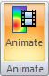

Animate simulation results
-
In the Simulation Results environment, select the data that you want to display.
To learn how, see Plot results.
-
Choose Home tab→Animate group→Animate.

The simulation results animation begins playing automatically in the graphics window, using the current settings on the Animate command bar.
-
Do one of the following:
-
Click the Play/Pause button to pause the animation at the current frame.
-
Click the Stop button
 to reset the animation to the initial frame.
to reset the animation to the initial frame.
-
-
On the Animate command bar, change the animation options.
Example:-
To slow or speed the animation, change the number in the Frames per second box or the Cycle length (seconds) box.
-
To change how much of the animation cycle is played, clear or set the Animate Full Cycle button .
Full cycle shapes smoothly return to their starting position, while half cycle shapes jump back.
-
To change the transitions between cycles, clear or set the Animate Sinusoidal Cycle button .
A sinusoidal cycle results in a smoother and more visually appealing animation than a linear cycle.
See the Animate command bar topic for examples of how these and other controls affect the animation.
-
-
Click Play to play the animation using the new settings.
-
On the command bar, click the Save As Movie
 to record the animation in a movie file.
to record the animation in a movie file. -
To exit the animation command, click Close or press Esc.
-
You can improve animation speed by clearing the check marks in front of the Loads, Constraints, and Connectors nodes in the Simulation pane. This turns off the corresponding symbols in the graphics window.
-
The animation must be paused or stopped to use the options in the Properties group on the Animate command bar.
-
You can generate an image for documentation and review using the Home tab→Output Results group→Save As Image command. Individual result plots can be saved in any of these formats: .bmp, .jpg, or .tif.
-
You can control the visibility and position of the header and the color bar in the animation window. You also can show or hide the minimum and maximum markers as the animation plays. To learn how, see Adjust the color bar.
To learn more about customizing these options, see Using the color bar.
-
You can Save changes to the analysis results display settings by creating your own display configuration.
-
You also can select the Animate command and the Save As Movie command from the shortcut menu of a result component in the Simulation tree-view.
How do I
Plot resultsAdjust the color bar
Learn more
Using the color barLook up more details
Animate command barSave As Movie dialog box